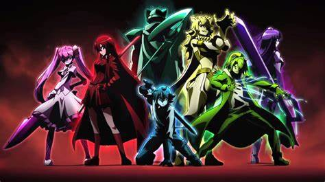

AkameGaKill er en Japansk tegneserie, den er også laget som manga
(Japanske tegneserie bøker) Historien starter med Tatsumi.
En landsbyboer som drar til hovedstaden for å samle inn penger
får å hjelpe landsbyen sin, når han plutselig oppdager at ting
ikke er som det skal. Leiemordergruppen kjent som Night Raid tilbyr
den unge mannen å hjelpe dem å stoppe det ferle som er på gang får
pengene han trenger til landsbyen sin. Tatsumi finner fort ut at
det er mye mer en bare diskuskjon og forviring på gang. I klanen
finner du syv talentede mensker, det er Akame, Bulat, Leone, Lubbock,
Mina, Sheele og lederen selv Najenda. Tatsumi blir snart et medlem
selv og må opleve tap av gode venner og drap på drap.

Serien komm ut 7 Juli 2014
det er 16+ begrunav bruk av rusmidler og vold
forfattere er Katelyn Barr · Makoto Uezu · Touko Machida og Kojiro Nakamura.
I mangaen får vi vite litt mer om fortiden til Akame. Akame er en av de viktikste hovedrollene,
hun blir veldig glad i Tatsomi og klarer ikke tanken på å miste han også.
Akame er en ung leiemorder. Som litten ble hun og søstra hennes tat med til en gruppe
snikmordere, da ser ikke Akame og søsteren Kurome eldere ut en ti år.
De ble trent opp til å være leiemordere og jobbe får noe som ikke egentlig
er på den gode siden, noe de ikke var bevist på på denne tiden. De måtte
gjenom masse livsfarlige treninger til lederene bestemte seg får hvem av de overlevende
som skulle på det profiskjonele teamet som fikk dra på oppdrag eller det som ble satt
til å trene og være erstatninger. Akame og Kurome blir skilt fra hverandre fordi
Akame var mye bedre for jobben en Kurome. Sendere finner Akame ut at de hun jobber
får ikke er den riktige siden og drar får å joine Night Raid i stede. Dette
skapte et ferlt sinne i Kurome og nå er alt hun vill ha hevn.